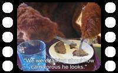
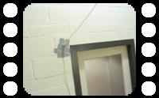
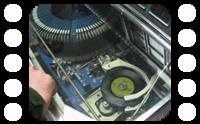
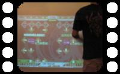
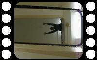
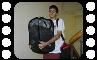

It's for this experimental film
Which nobody knows about, and which
I'm still figuring out what's going to go
In my experimental film
Yeah, you're all gonna be in this experimental film
And even though I can't explain it
I already know how great it—
Even though I can't explain it
I already know how great it's
-- TMBG, "Experimental Film" |
Throughout the course of the development of this website, I've made a couple of films. Some of them have been taken straight off of my trusty digital camera/video recorder, others have been slightly edited using the Windows XP-standard Movie Maker software, while others are just slideshows. Here they are, all in one place.
Jump Links (Chronological): Mail Run | Laundry Run | Peter and the Stairs | Dance Dance Revolution | The Jukebox | Cable Pulling | Best of Bear
Click here to learn more about Brick House Productions.
Detail List (Newest First):
|  | | Best of Bear
23.2 MB
Bear E. Cool goes out to dinner. Hilarity ensues. Here's the best of all the clips we got during the trip. Closed caption for the humor impaired. |
| | | |
| | | |
|  | | The Super Bowl Cable Pulling Job
1.8 MB
SUPER BOWL PARTY! Problem: nearest cable jack 75 feet away. Looks like a job for Brick House Productions. |
| | | |
| | | |
|  | | The Inagural Autonomous Operation of the Hillcrest Jukebox
25.8 MB
Long Story Short: found an old, broken jukebox in the attic. Electrical Engineers fixed it. It works now. It is awesome. |
| | | |
| | | |
|  | | Dance Dance Revolution
19.0 MB
Have you heard the term "DDR" before? Have you wondered what it is? Here are some people who are good at the game Dance Dance Revolution, to show you what it should be. |
| | | |
| | | |
|  | | Stairs
12.5 MB
Peter + 2:30 AM + Soldier with Parachute + Stairs = Sort of Creepy |
| | | |
| | | |
|  | | Laundry Run
2.88 MB
This film was made when I was learning to use Windows Movie Maker in advance of the Techaanisqatsi Teaser Trailer of some pictures I took while doing a particularly large amount of laundry. |
| | | |
| | | |
| | Mail Run
15.8 MB
The first experimental film, I made this just for fun and as an interesting concept. It is kind of weird, and the dark/light balance is off, and the "script" is kind of sketchy. Check it out. |
I already know the ending
It's the part that makes your face implode
I don't know what makes your face implode
But that's the way the movie ends
-- TMBG, "Experimental Film" |
Back to PeterPages.net
Learn more about Brick House Productions